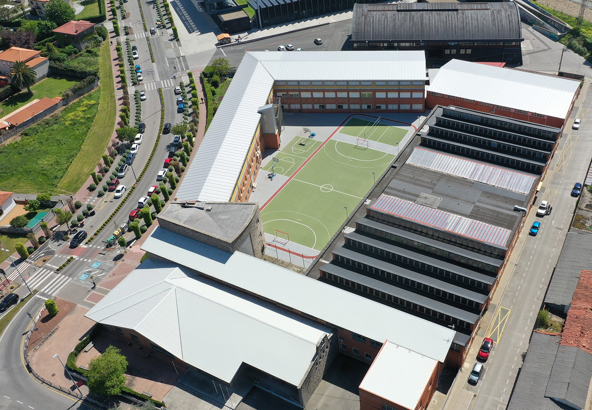
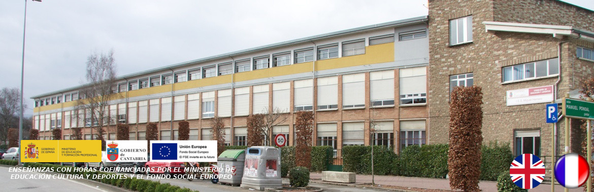
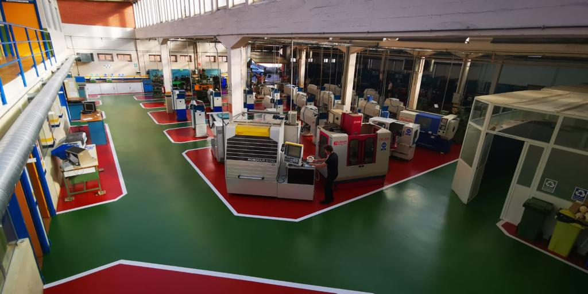
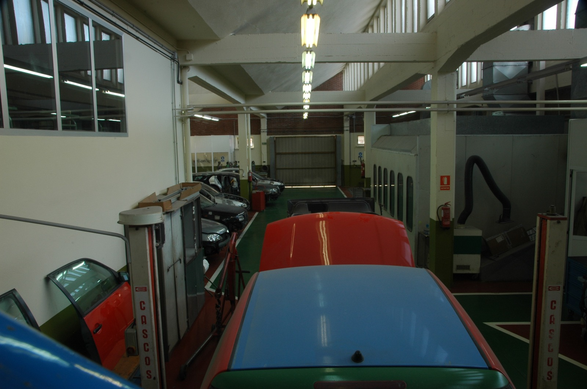

El curso de especialización en Inteligencia Artificial y Big Data proporciona a los estudiantes una introducción práctica a los conceptos y técnicas fundamentales en inteligencia artificial y análisis de grandes volúmenes de datos.
El curso de especialización en Vehículos Híbridos y Eléctricos ofrece una visión general de la tecnología y los sistemas utilizados en los vehículos de propulsión híbrida y eléctrica, preparando a los estudiantes para la industria automotriz del futuro.
Bilingüe en Inglés
La Educación Secundaria Obligatoria (ESO) en el IES Miguel Herrero de Cantabria ofrece cursos de 1º a 4º, con una opción bilingüe en inglés que permite a los estudiantes mejorar sus habilidades lingüísticas mientras cursan sus estudios.
El curso de FP Básica en Fabricación y Montaje proporciona a los estudiantes una formación práctica en los procesos de fabricación industrial y montaje de productos, preparándolos para ingresar al mercado laboral en sectores como la industria manufacturera.
El curso de FP Básica en Mantenimiento de Vehículos ofrece a los estudiantes una formación técnica en el mantenimiento y reparación básica de vehículos automotores, proporcionándoles habilidades prácticas para trabajar en talleres de automoción.
El ciclo formativo de FP Grado Medio en Carrocería proporciona a los estudiantes una formación práctica en la reparación y restauración de carrocerías de vehículos, preparándolos para trabajar en talleres de chapa y pintura.
El ciclo formativo de FP Grado Medio en Electromecánica de Vehículos Automóviles ofrece a los estudiantes una formación integral en sistemas mecánicos y eléctricos de vehículos, preparándolos para trabajar en talleres de reparación de automóviles.
El ciclo formativo de FP Grado Medio en Gestión Administrativa proporciona a los estudiantes habilidades administrativas y conocimientos contables, preparándolos para trabajar en empresas y organizaciones en roles administrativos.
El ciclo formativo de FP Grado Medio en Mecanizado ofrece a los estudiantes una formación técnica en la fabricación de piezas metálicas utilizando máquinas y herramientas de mecanizado, preparándolos para trabajar en industrias metalúrgicas y de fabricación.
El ciclo formativo de FP Grado Medio en Sistemas Microinformáticos y Redes proporciona a los estudiantes una formación técnica en la instalación, configuración y mantenimiento de sistemas informáticos y redes, preparándolos para trabajar en empresas de tecnología y servicios informáticos.
El ciclo formativo de FP Grado Superior en Administración de Sistemas Informáticos y Redes ofrece a los estudiantes una formación avanzada en la administración y gestión de sistemas informáticos y redes, preparándolos para roles técnicos en empresas y organizaciones.
El ciclo formativo de FP Grado Superior en Administración y Finanzas proporciona a los estudiantes una formación en gestión administrativa y contabilidad, preparándolos para trabajar en áreas financieras y administrativas de empresas y organizaciones.
El ciclo formativo de FP Grado Superior en Desarrollo de Aplicaciones Multiplataforma ofrece a los estudiantes una formación avanzada en el diseño y desarrollo de aplicaciones informáticas multiplataforma, preparándolos para trabajar como desarrolladores de software en diferentes sectores.
El ciclo formativo de FP Grado Superior en Desarrollo de Aplicaciones Web ofrece a los estudiantes una formación especializada en el diseño y desarrollo de aplicaciones web, incluyendo tecnologías de programación front-end y back-end, así como bases de datos y seguridad informática.
El ciclo formativo de FP Grado Superior en Diseño de Fabricación Mecánica proporciona a los estudiantes una formación en diseño asistido por ordenador (CAD) y fabricación digital, preparándolos para trabajar en el diseño y desarrollo de productos mecánicos.
El ciclo formativo de FP Grado Superior en Programa de la Producción de Fabricación Mecánica ofrece a los estudiantes una formación en gestión de procesos de producción y control de calidad en industrias de fabricación mecánica, preparándolos para roles de supervisión y gestión en empresas del sector.